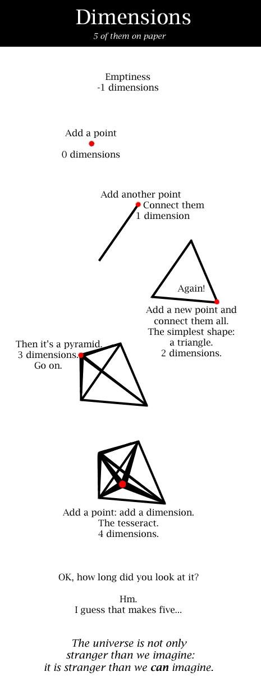

Comic JK 65
When I Feel Like It
⇤
<
?
>
⇥

⇤
<
?
>
⇥
Forum
.
RSS
.
Digg
.
Facebook
.
Reddit
.
Twitter
.
Stumbleupon
Your mother's lust for dorky college boys is stranger than we can imagine. The tesseract has sixteen vertices. You can't make one with 5 points! What's drawn there is a pentachoron, not a tesseract. Additionally, a pyramid has 5 vertices (square base) -- what's labeled pyramid is actually a (stately) tetrahedron. No, hypercubes have 16 vertices. The nomenclature is probably different for the (stately) tetrahedron family of polyhedrons. I'm sorry, I just see 2 (stately) tetrahedra kissing. title text forgives all I looked at the wikipedia page for tesseracts and now I just want a nice three dimensional corner to hide in. It's okay, we understand. > And yet I still want to say he's an idiot. >:D The dimension time is demonstrated by the durability of the single point, which is therefore not 0-dimensional. Time is not an emergent phenomenon, and when the smart people get this, it will allow them to fix their unification theories. I tried explaining a similar idea to some friends, it broke their minds... Technically, time is defined as the rate at which things happen. >And the rate is defined as the amount of time it takes to happen. Yay circular definitions! 6th dimension... can go on to be different branches of time... tick tock Wasn't the tesseract in the 5th dimension??? Nah, a tesseract is nothing more than a 4th dimensional cube. Just arrange 8 cubes the way you would arrange 6 squares that can be folded into a cube and then (this is the hard part, I admit) fold the shit out of them. this was worth it